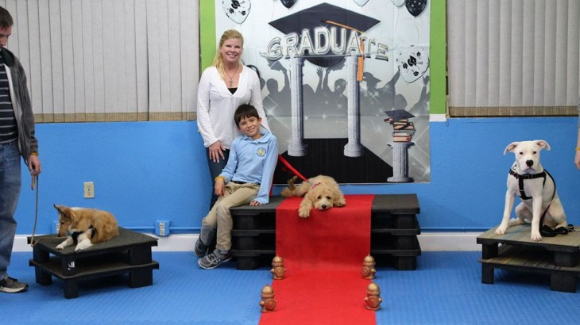

Leash Training
|
Tips on what to expect when training, and how to respond to these
For many new dog owners excited to bring their puppy home, the amount of contradictory advice for when to start training their new family member can be confusing. On one side, some dog trainers recommend avoiding training until the puppy is at least six months old, preferring to let the puppy experience the world without guidance and sometimes without integration into the human family. On the other side, some experts recommend diving right in to training as soon as they are brought home. As it turns out, both sides are correct, depending on which style of training the pet parent chooses. Discipline-based training, which uses spike collars and harsh corrections, should only be started when the dog is developed and grown enough to withstand the physical corrections. This style has also fallen out of favor once positive-reinforcement training was shown to be more effective in the long term, creating a stronger bond between dog and human and a higher training success rate1. Positive-reinforcement training is appropriate for any age pet as long as the behavioral expectations are realistic for the age on the dog. Training at Eight to Ten Weeks: Before eight weeks, your puppy is entirely dependent on their mother for all life’s necessities, but they are also learning valuable life lessons from their siblings. This is why most pet professionals recommend eight weeks as the earliest time you should take a puppy home. Starting at eight weeks, your puppy is forming object associations and is entirely dependent on you in many ways. This period of interaction will also set the tone for your relationship with your dog for the rest of your time together, so creating good memories is important. Don’t expect too much deliberate action on your puppy’s part during this time, it is all about forming positive associations with behaviors you like verses behaviors you don’t like. Giving plenty of praise and treats for good behaviors, such as eliminating on the grass, coming to you when called, and learning to associate people with good memories. Direct their attention to appropriate objects so that they learn acceptable behavior by giving them a puppy toy when they choose to chew on a couch cushion. Harsh corrections or discipline at this stage will only serve to create a fear response to your presence, not train your puppy out of any unwanted behaviors. |
|

|
|---|
Click here to go to the previous page